As bibliotecas públicas são admiradas pela quantidade de obras que guardam e também por sua decoração. Antigamente, as informações a respeito de cada livro nesses espaços precisavam ser consultadas in loco. Por isso, os bibliotecários mantinham a estrutura desses locais sempre muito organizada; do contrário, o tempo para achar um livro específico tornaria a pesquisa inviável. Na maioria dos casos, as seções eram classificadas por ordem alfabética, e a localização dos exemplares ficava mais fácil se na ficha de registro da obra estivessem indicados o corredor e a estante em que ela deveria estar.
A totalidade dos livros contidos em uma biblioteca, os diversos corredores, as seções existentes e os livros disponíveis em cada uma delas são exemplos de conjuntos, subconjuntos e seus respectivos elementos.
Nesse contexto, podemos dividir os diferentes livros em grupos ou categorias (conjuntos), respeitando uma lógica, como os gêneros, a ordem alfabética ou o país de origem de cada um deles. Essa mesma lógica pode ser aplicada na representação matemática dos conjuntos, que é o objeto de estudo deste capítulo.
- Como a linguagem matemática pode representar um conjunto?
- De que forma esses grupos podem se relacionar?
Neste capítulo será abordada a competência C5.
A ideia de conjunto
A ideia de conjunto é intuitiva e parte de conceitos primitivos, não tendo uma definição formal. Segundo Georg Cantor, denominamos conjunto todo agrupamento de objetos bem definidos e discerníveis, de nossa compreensão e percepção, chamados de elementos do conjunto.
Podemos entender um conjunto como uma coleção de elementos, podendo ser eles números, selos postais, carrinhos etc.

Coleção de selos postais do mundo todo.
Gwengoat/iStockphoto.com
Representações de um conjunto
Na linguagem matemática, em geral, os conjuntos são nomeados por letras maiúsculas do nosso alfabeto (A, B, C, D, ...), e seus elementos, por letras minúsculas (a, b, c, d, ...).
Forma tabular, listagem ou enumeração
Os elementos são apresentados entre chaves e de forma explícita. A separação dos elementos ocorre por vírgula ou ponto e vírgula, como nos exemplos a seguir:
- A
= {primavera, verão, outono, inverno} - B
= {0, 2, 4, 6, 8, 10, 12, 14, 16, 18, ...} - C
= {1; 2; 3; ...; 98; 99} - D
= {1; 0,1; 0,01; 0,001; 0,0001; ...}
Estações do ano.
frentusha/iStockphoto.com
Forma sintética ou por propriedade
Os elementos do conjunto também são representados dentro de chaves, sendo escritos por uma propriedade comum a todos eles. Veja:
A
Ou seja, A é o conjunto dos x tal que x tem a propriedade P.
Exemplos:
- A
= {x | x é uma estação do ano} - B
= {x | x é um número par não negativo} - C
= {x | x é número natural maior que 0 e menor que 100}
É muito importante observar que a representação por propriedade é dividida em duas partes: a primeira usa uma incógnita qualquer para identificar o universo dos elementos (em geral, uma letra, como o “x”), e a segunda indica a propriedade característica dos elementos do conjunto.
Diagrama de Venn-Euler
Uma boa maneira de visualizar as relações entre os conjuntos é o diagrama de Venn-Euler, pois ele facilita o raciocínio e a interpretação das informações. Esse diagrama representa os conjuntos por meio de elementos interiores a uma região plana, delimitada por uma curva fechada e simples.
Exemplos:
A
A
A
A
Relação de pertinência
Um determinado elemento pode pertencer ou não a um conjunto, o que pode ser indicado por meio da seguinte notação: para indicar que ele é elemento, utilizamos a notação ∈ (pertence); caso contrário, a notação ∉ (não pertence).
Exemplos:
A
Logo, 1 ∈ A, 7 ∈ A, 5 ∉ A e 3 ∉ A.
A
Portanto, 2 ∈ A, {3} ∈ A, 3 ∉ A e {1} ∉ A.
O conceito de elemento é relativo, uma vez que um conjunto pode ser elemento de outro, como acontece no segundo exemplo.
O Brexit e a relação de pertinência
Você já ouviu falar sobre o Brexit, a saída do Reino Unido da União Europeia (UE)? Brexit é uma abreviação para British exit (“saída britânica”, na tradução literal para o português). Esse é o termo mais associado à decisão do Reino Unido de não pertencer mais à UE. A União Europeia é um bloco econômico composto por 27 países-membros, que permite a circulação de mercadorias e de pessoas entre eles.
O Reino Unido possuía, em relação aos outros países do bloco, mais interesses políticos e econômicos do que territoriais. Por exemplo, ele não faz parte da zona Schengen e possui um processo próprio de controle de imigração. O movimento “eurocético” de tempos em tempos mostrava sua força política entre a população britânica. Até que, no ano de 2016, foi realizado um plebiscito sobre o assunto, que foi uma promessa de campanha eleitoral do primeiro-ministro da época, David Cameron. Com 52% dos votos, o Brexit foi decidido. Tal fato causou uma grande repercussão no mundo todo, pois até então, nenhum país tinha deixado a UE. Assim, atualmente, podemos falar que o Reino Unido já não pertence mais à União Europeia. Mas como isso se relaciona com a teoria dos conjuntos?
Vamos chamar a União Europeia de conjunto UE e utilizar a forma tabular para representar a formação atual desse bloco:
UE = {Alemanha, Áustria, Bélgica, Bulgária, Chéquia, Chipre, Croácia, Dinamarca, Eslováquia, Eslovênia, Espanha, Estônia, Finlândia, França, Grécia, Holanda, Hungria, Irlanda, Itália, Letônia, Lituânia, Luxemburgo, Malta, Polônia, Portugal, República Tcheca, Romênia, Suécia}
Outra forma de representação é a forma sintética:
UE = {x | x é um país-membro da União Europeia}
Assim, usando as bandeiras da Alemanha e da União Europeia, podemos representar:

A Alemanha pertence à União Europeia.
Puwadol Jaturawutthichai/Shutterstock.com
Em outras palavras, a Alemanha é um elemento do conjunto UE.
Assim, a Alemanha possui algumas características comuns a outros países do bloco: seus cidadãos podem viver ou trabalhar em qualquer país da UE; bem como transferir dinheiro; vender bens sem restrições; entre outros privilégios.
Como o Reino Unido não é mais um país-membro da União Europeia, podemos utilizar a seguinte representação:

O Reino Unido não pertence à União Europeia.
Desta forma, podemos inferir que o Reino Unido não possui mais direito ao voto nas decisões desse bloco, pois somente os países que pertencem a ele possuem esse direito. Outro ponto que podemos destacar é que o Reino Unido pode realizar acordos de livre comércio com qualquer outro país ou até mesmo com outros blocos econômicos. Você conhece outros blocos formados por diferentes países?
Como exemplos, podemos citar o Mercosul e o USMCA (antigo NAFTA).
- Mercado Comum do Sul (MERCOSUL): composto por Brasil, Argentina, Paraguai e Uruguai.
- USMCA (Acordo Estados Unidos-México-Canadá, antigo Naft: composto pelos Estados Unidos, México e Canadá.
Também podemos utilizar a ideia de conjuntos para representar esses blocos.
Chamando de M o conjunto MERCOSUL:
M = {Brasil, Argentina, Paraguai, Uruguai}
Usando a letra U para representar o conjunto de países-membro do USMCA:
U = {Estados Unidos, Canadá, México}
Podemos afirmar que o Brasil pertence ao Mercosul (Brasil ∈ M), mas não pertence ao USMCA (Brasil ∉ U).
Utilizando as bandeiras dos países citados acima, podemos criar os seguintes diagramas de Venn:

PATIWIT HONGSANG/Shutterstock.com
Há outras organizações internacionais, além dos blocos econômicos, como a Organização das Nações Unidas (ONU), a Organização Mundial do Comércio (OMC) e a Organização para a Cooperação e Desenvolvimento Econômico (OCDE). Você conseguiria representar essas organizações utilizando os conhecimentos sobre teoria dos conjuntos?
Conjuntos notáveis
Alguns conjuntos aparecerão constantemente nos próximos capítulos, por isso, neste momento, é importante conhecermos as suas definições e representações, que serão apresentadas a seguir.
Conjunto vazio
Esse conjunto não possui elementos e tem sua representação dada por
Exemplos:
A
B
Conjunto unitário
É o conjunto formado por um único elemento.
Exemplos:
A
B
Conjunto universo (U)
De modo geral, todos os conjuntos de um estudo fazem parte de um universo. Sendo assim, o conjunto universo, representado pela letra “U”, é aquele ao qual pertencem todos os elementos relacionados a tal estudo.
Nos diagramas, é comum representar o universo por um retângulo e dentro dele os conjuntos existentes.
Exemplos:
U
U

1
Resolva a
equação x²
Resolução:
x2
Como a solução
Subconjunto
Imagine que o conjunto A é formado por todos os professores de sua escola. A partir dos seus elementos, podemos criar o conjunto M, constituído de professores de Matemática, e o conjunto P, composto de professores de Língua Portuguesa. Logo, os conjuntos M e P são subconjuntos de A, pois todos os elementos de M e de P pertencem a A. Contudo, caso algum elemento do conjunto M, por exemplo, não pertencesse a A, M não seria subconjunto de A.
Com base no exemplo anterior, podemos definir um conceito: o conjunto B será subconjunto de A (B ⊂ A) se, e somente se, todo elemento de B pertencer ao conjunto A.
Exemplo:
Observe o esquema a seguir:
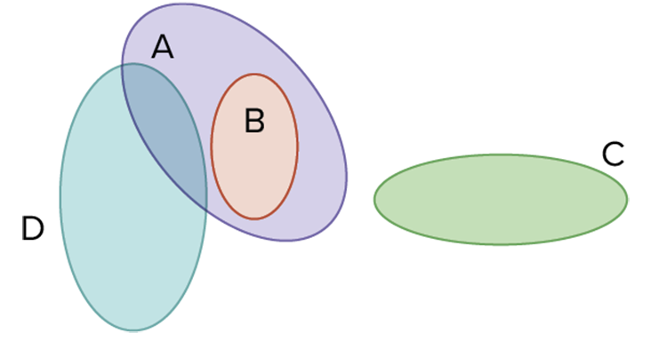O conjunto B é subconjunto de A, e os conjuntos C e D não são subconjuntos de A. Assim, temos:
O conjunto B é subconjunto de A, e os conjuntos C e D não são subconjuntos de A. Assim, temos:
- B ⊂ A (lê-se B está contido em A);
- C
Ú A (lê-se C não está contido em A); - D
Ú A (lê-se D não está contido em A).
Exemplos:
- {2, 4, 6} ⊂ {1, 2, 3, 4, 5, 6, 7}
- {{1}, 4, 6} ⊂ {{1}, 2, {3}, 4, {5}, 6}
- {1, 5, 6}
Ú {1, 2, 3, 4, 5} - {2, {3}, 4}
Ú {1, 2, 3, 4}
Propriedades dos subconjuntos
- P1: A ⊂ A (reflexividade)
- P2: A ⊂ B e B ⊂ C
~ A ⊂ C (transitividade) - P3:
0 ⊂ A (o vazio é subconjunto de qualquer conjunto) - P4: A ⊂ B e B ⊂ A
^ A= B (igualdade de conjuntos)
1. A relação de pertinência ( ∈) é usada apenas para associar um elemento “a” com um conjunto A em que “a” é elemento.
Por exemplo:
A notação 1 ∈ {0, 1, 2, 3, 4} está correta.
A escrita  está incorreta.
está incorreta.
2. A relação de inclusão (
⊂) é usada apenas para associar um conjunto B com
um conjunto A em que B é subconjunto de A, ou seja, B
Por exemplo:
A notação {1} ⊂ {0, 1, 2, 3, 4} está correta.
A escrita  está incorreta.
está incorreta.
2
Sabendo que
A
- ( ) 5 ∈ A
- ( ) {1} ∈ A
- ( ) 7 ⊂ A
- ( ) {5} ⊂ A
- ( ) {1, 5} ∈ A
- ( ) {1, 5} ⊂ A
- ( ) 0 ∈ A
- ( ) 0 ⊂ A
Resolução:
- Primeira afirmativa: verdadeira.
- Segunda afirmativa: falsa. {1} não é elemento de A.
- Terceira afirmativa: falsa. 7 é elemento de A, mas a notação “
ú ” é usada para relacionar dois conjuntos. - Quarta afirmativa: verdadeira.
- Quinta afirmativa: falsa. {1, 5} não é elemento de A.
- Sexta afirmativa: verdadeira.
- Sétima afirmativa: falsa.
0 não é elemento de A, mas um subconjunto. - Oitava afirmativa: verdadeira.
Conjunto das partes de A: 𝒫(A)
Define-se o conjunto das partes de A
Exemplos:
O conjunto A
Logo, o conjunto das partes de A é:
𝒫(A)
O conjunto B
𝒫(B)
Essa ideia será mais bem apresentada ao estudarmos análise combinatória, que será abordada na 2a série do Ensino Médio. Contudo, no momento, você pode perceber seu uso nos seguintes casos:
- Como A
= {1, 3} possui 2 elementos, 𝒫(A)= {0 , {1}, {3}, {1, 3}} tem 2²= 4 elementos. - Como B
= {0, 1, 5} possui 3 elementos, 𝒫(B)= {0 , {0}, {1}, {5}, {0, 1}, {0, 5}, {1, 5}, {0, 1, 5}} tem 2³= 8 elementos.
3
Udesc 2016 Seja X um conjunto com 6 elementos distintos e seja 𝒫(X) o conjunto das partes de X. O número de elementos de 𝒫(X) é:
- 62
- 64
- 6
- 7
- 63
Resolução:
Alternativa: B
Sabendo que n(X)
Operações com conjuntos
Para melhor entender esse conceito, imagine que uma nutricionista afirmou que é muito importante adicionar verduras ou legumes às principais refeições do dia a dia para se ter uma alimentação balanceada e saudável. Note que o uso do conectivo “ou” é inclusivo, isto é, se algum dos elementos recomendados pela nutricionista for incluído na alimentação, a condição estará satisfeita, resultando em um prato com um dos dois itens.
A união (ou reunião) de dois conjuntos A e B, denotada por A ∪ B, é o conjunto que satisfaz à seguinte propriedade: qualquer elemento de A ou de B é elemento de A ∪ B.
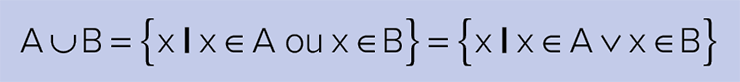
Lê-se A ∪ B como “A união com B”.
Exemplos:

A
B
A ∪ B
Legumes frescos de diversos tipos em uma peneira metálica.
fcafotodigital/iStockphoto.com

A
B
A ∪ B

A
B
A ∪ B
Propriedades da união
- P1: A ∪
0 = A - P2: A ∪ U
= U - P3: A ∪ A
= A (idempotent - P4: A ∪ B
= B ∪ A (comutativ - P5: (A ∪ B) ∪ C
= A ∪ (B ∪ C) (associativ
Interseção de conjuntos
Hoje em dia, devido à alta concorrência no mercado de trabalho, é comum que algumas empresas solicitem a seus futuros funcionários fluência em inglês e espanhol, ou seja, para poder concorrer a uma vaga nessas companhias, o candidato deve estar no grupo dos fluentes nesses dois idiomas ao mesmo tempo.
A interseção de dois conjuntos A e B, denotada por A
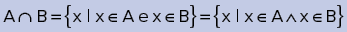
Lê-se A ∩ B como “A interseção com B”.
Exemplos:

A
B
A ∩ B

A
B
A ∩ B

A
B
A ∩ B
Dois conjuntos A e B são classificados como
disjuntos se, e somente se, não tiverem um elemento em comum,
ou seja, A ∩ B
Propriedades da interseção
- P1: A ∩
0 = 0 - P2: A ∩ U
= A - P3: A ∩ A
= A (idempotent - P4: A ∩ B
= B ∩ A (comutativ - P5: (A ∩ B) ∩ C
= A ∩ (B ∩ C) (associativ
Diferença de conjuntos
Um dos eventos mais marcantes do esporte é a Copa do Mundo, disputada a cada quatro anos por diversas seleções do mundo todo. Essa competição tem histórias marcantes e movimenta muito dinheiro, principalmente no país-sede.
Dos oito países que já conquistaram o título de campeão mundial de futebol (Brasil, Itália, Alemanha, Argentina, Uruguai, França, Inglaterra e Espanh, quase todos levantaram a taça enquanto eram sede, menos o Brasil e a Espanha. Então, em 2014, quando esse campeonato foi realizado novamente no nosso país, a torcida brasileira ficou animada, pois queria vencer o torneio em casa.
Observe que, no parágrafo anterior, a palavra “menos” retirou do conjunto dos campeões mundiais o Brasil e a Espanha. Ou seja, essa é exatamente a ideia de diferença de conjuntos, representada no diagrama a seguir:
A diferença de dois conjuntos A e B, denotada por A
Lê-se A
Exemplos:

A
B
A

A
B
A

A
B
A
É muito importante saber que, em geral, A

Propriedades da diferença
- P1: A
- A= 0 - P2: A
- 0 = A - P3:
0 - A= 0
Conjunto complementar
O conjunto complementar é composto dos elementos que faltam para atingir um todo. Por exemplo, o complementar dos dias úteis de uma semana {segunda-feira, terça-feira, quarta-feira, quinta-feira, sexta-feira} em relação a todos os dias da semana é o conjunto {sábado, domingo}.
Sendo A e B dois conjuntos tais que A ⊂ B, o complementar de A em relação a B é o conjunto formado por todos os elementos que pertencem a B e não pertencem a A.
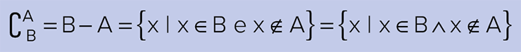Lê-se como “complementar de A em relação a B”.
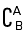Exemplo:

A
B
Caso o complementar seja em relação ao universo no qual o conjunto A está contido, podemos usar as seguintes notação e representação no diagrama:
Propriedades do complementar
- P1: 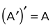
-
P2:
0 ′= U -
P3: U′
= 0 - P4: A ∪ A′ = U
-
P5: A ∩ A′ =
0
Aprofundando
Neste momento, é relevante falar dos teoremas de De Morgan, também conhecidos como leis de De Morgan:
Se A e B são conjuntos de um determinado universo, então o complemento da união de A com B é a interseção dos complementos de A e B (teorema 1).
1.  (primeira lei de De
Morgan)
(primeira lei de De
Morgan)
Já o complemento da interseção de A e B é a união dos complementos de A e B (teorema 2).
2. 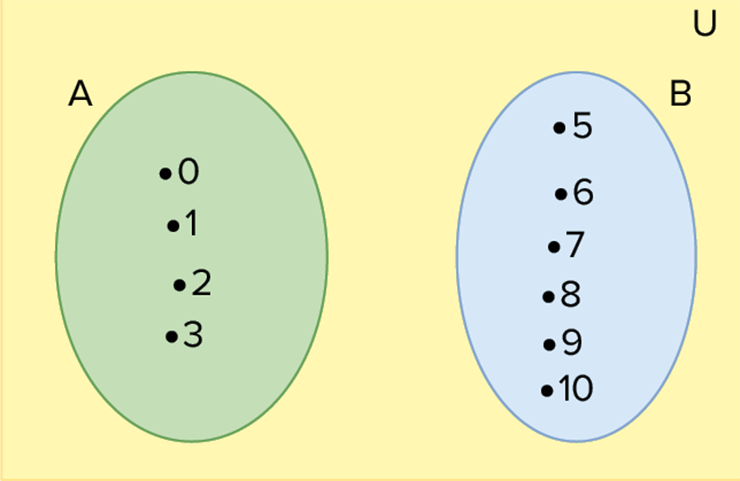 (segunda lei de De Morgan)
Esses resultados foram demonstrados por Augustus De Morgan (1806-1871), nascido na Índia, e por George Boole (1815-1864), natural do Reino Unido, e tiveram grande importância no estudo da Lógica moderna. As investigações teóricas realizadas por eles, no século XIX, encontraram uma aplicação adequada na operação dos circuitos eletrônicos e na programação de computadores a partir dos anos de 1960 até os dias atuais.
Diferença simétrica
A diferença simétrica entre os conjuntos A e B contém os elementos que estão somente em A ou somente em B, como é o caso do “ou”, que tem a ideia de excluir, citado na união de conjuntos. Essa diferença pode ser representada da seguinte maneira:
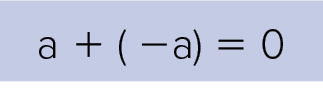
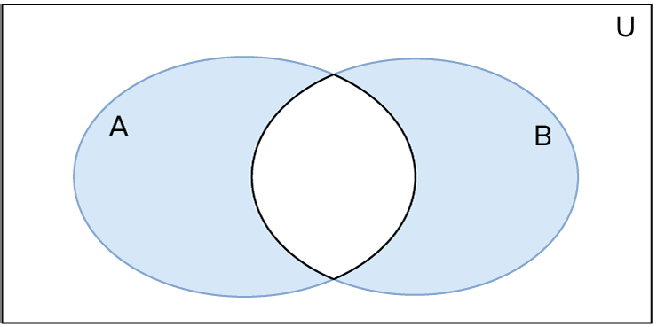Exemplo:
Seja A
Número de elementos de um conjunto
Dado um conjunto finito A, o número de seus elementos será representado por n(A) ou A.
Exemplos:
A
B
Uma relação muito importante, que pode ser facilmente observada no diagrama de Venn-Euler, é:
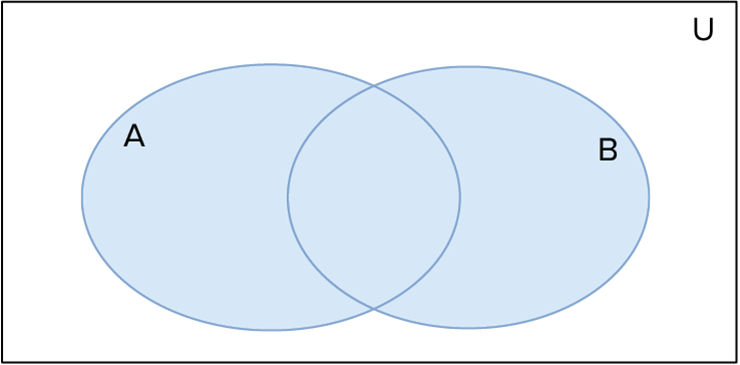
Note que a porção A ∩ B está presente em A
e B simultaneamente. Por isso, deve-se subtrair n(A ∩ B) de
n(A)
4
Em uma pesquisa realizada com estudantes de uma escola, verificou-se que 100 alunos gostam de estudar Português e 150 preferem Matemática. Além disso, 20 estudantes afirmaram gostar das duas disciplinas, enquanto 110 não preferem nenhuma delas. Sabendo disso, quantos alunos no total gostam de estudar Português e Matemática?
Resolução 1:
Número de alunos que gostam de estudar:
Português: n(P)
Matemática: n(M)
Ambas as disciplinas: n(P ∩ M)
Logo, o número de alunos que gostam de estudar as duas disciplinas é dado por:
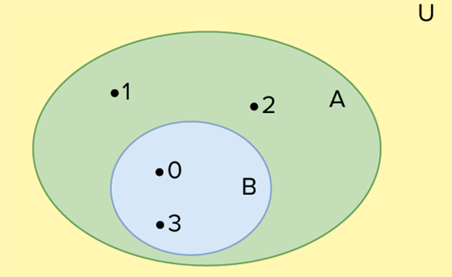 alunos
Resolução 2:
É possível resolver a questão montando um diagrama e preenchendo seus espaços, como representado ao lado.
Ao adicionar os valores que representam a quantidade de alunos que gostam de Português, de Matemática e das duas disciplinas, temos
80
A relação citada também pode ser estendida para três conjuntos, como é possível visualizar no diagrama a seguir:
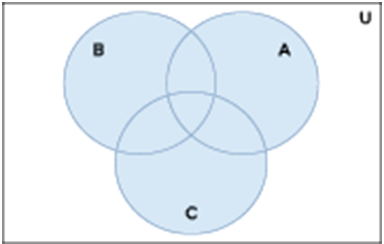 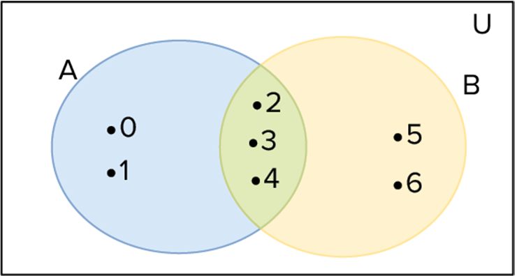5
Uma pesquisa verificou a quantidade de pessoas que assistem a três diferentes tipos de noticiário: A, B e C. Os dados levantados foram: 65 assistem ao noticiário A;45 assistem ao noticiário B;42 assistem ao noticiário C;20 assistem ao noticiário A e ao B;25 assistem ao noticiário A e ao C;15 assistem ao noticiário B e ao C;8 assistem aos três noticiários.
Qual é o número de pessoas que assistem a algum dos noticiários?
Resolução 1:
De acordo com os dados apresentados, temos:
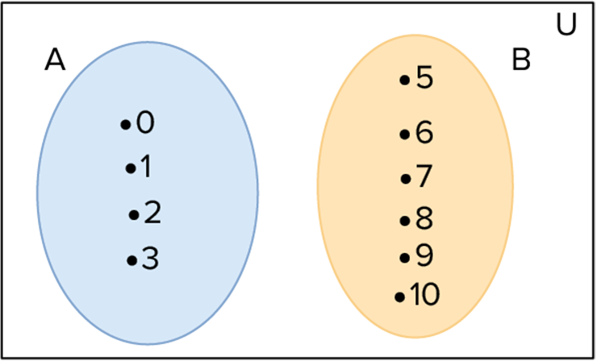
Resolução 2:
Ao montar os três diagramas e preencher seus espaços, obtemos o diagrama:
Assim, o número de pessoas que assistem a algum noticiário é:
28
1
Sendo A
- ( ) 0 ∈ A
- ( ) {1} ∈ A
- ( ) {5} ∈ A
- ( ) {1; 3} ∈ A
-
( )
0 ∈ A - ( ) {1} ⊂ A
- ( ) {1; 5} ⊂ A
- ( ) {1; 3} ⊂ A
- ( ) {{1}; 3} ⊂ A
2
Dados A{0; 2; 4; 6; 8; 10}, B{3; 4; 5; 6; 7}, C{1; 2; 3; 8; 9; 10} e D{0; 1; 2; 3; 4; 5; 6; 7; 8; 9; 10}, determine:
- A ∪ B
- B ∩ C
- A ∩ (B ∪ C)
- B
- A - A
- B - D
- (A ∩ C) - (C
- A) ∩ (B- D) - 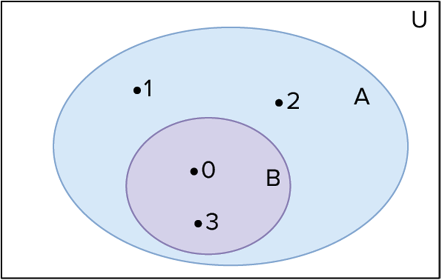
- cCA í B
- 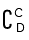
3
No diagrama a seguir, hachure as regiões pedidas:Considere os conjuntos representados a seguir:

- (A ∪ B) ∩ C
- (A
- B) ∪ (B ∩ C) - (A ∩ C)
- B
4
Represente, enumerando seus elementos, os conjuntos:
- P, Q e R
- (P ∩ Q)
- R - (P ∪ Q)
- R - (P ∪ R)
- P - (Q ∩ R) ∪ P
5
Uece 2015 Em um grupo de 300 alunos de línguas estrangeiras, 174 alunos estudam inglês e 186 alunos estudam chinês. Se, neste grupo, ninguém estuda outro idioma além do inglês e do chinês, o número de alunos deste grupo que se dedicam ao estudo de apenas um idioma é:
- 236
- 240
- 244
- 246
6
Unicamp 2017 Sabe-se que, em um grupo de 10 pessoas, o livro A foi lido por 5 pessoas e o livro B foi lido por 4 pessoas. Podemos afirmar corretamente que, nesse grupo,
- pelo menos uma pessoa leu os dois livros.
- nenhuma pessoa leu os dois livros.
- pelo menos uma pessoa não leu nenhum dos dois livros.
- todas as pessoas leram pelo menos um dos dois livros.
7
UEG-GO 2018 Dados dois conjuntos, A e B, ondeA B{b, d}, A B{a, b, c, d, e} e B – A{a}.O conjunto B é igual a
- {a}
- {c, e}
- {a, b, d}
- {b, c, d, e}
- {a, b, c, d, e}
8
Fuvest-SP 2018 Dentre os candidatos que fizeram provas de matemática, português e inglês num concurso, 20 obtiveram nota mínima para aprovação nas três disciplinas. Além disso, sabe-se que:14 não obtiveram nota mínima em matemática;16 não obtiveram nota mínima em português;12 não obtiveram nota mínima em inglês;5 não obtiveram nota mínima em matemática e em português;3 não obtiveram nota mínima em matemática e em inglês;7 não obtiveram nota mínima em português e em inglês; 2 não obtiveram nota mínima em português, matemática e inglês.
A quantidade de candidatos que participaram do concurso foi
- 44.
- 46.
- 47.
- 48.
- 49.
1
EsPCEx-SP Uma determinada empresa de biscoitos realizou uma pesquisa sobre a preferência de seus consumidores em relação a seus três produtos: biscoitos cream cracker, wafer e recheados. Os resultados indicaram que:
- 65 pessoas compram cream crackers.
- 85 pessoas compram wafers.
- 170 pessoas compram biscoitos recheados.
- 20 pessoas compram wafers, cream crackers e recheados.
- 50 pessoas compram cream crackers e recheados.
- 30 pessoas compram cream crackers e wafers.
- 60 pessoas compram wafers e recheados.
- 50 pessoas não compram biscoitos dessa empresa.
Determine quantas pessoas responderam a essa pesquisa.
- 200
- 250
- 320
- 370
- 530
2
Mackenzie-SP 2015 Se A
- múltiplo de 4, menor que 48.
- primo, entre 27 e 33.
- divisor de 16.
- par, múltiplo de 6.
- pertencente ao conjunto {x ∈
ℕ | 32
< x≤ 40}.
3
FICSAE-SP 2018 Um grupo de 180 turistas está hospedado em um mesmo hotel no estado de São Paulo. As regiões Norte, Sul e Sudeste são as regiões do Brasil que já foram visitadas por pelo menos um desses turistas. Desses turistas, 89 já estiveram na Região Sul e 78 já estiveram na Região Norte. Sabendo que 33 desses turistas só conhecem a Região Sudeste, o número desses turistas que já estiveram nas Regiões Norte e Sul é
- 10.
- 13.
- 17.
- 20.
4
PUC-Rio 2017 Em uma pesquisa, constatou-se que, das 345 pessoas de um determinado local, 195 jogavam tênis, 105 jogavam tênis e vôlei, e 80 não jogavam nem vôlei nem tênis.
Qual é o número de pessoas que jogavam vôlei e não jogavam tênis?
- 70
- 75
- 105
- 180
- 195
5
PUC-PR 2015 Em uma enquete, com 500 estudantes, sobre a preferência de cada um com três tipos diferentes de sucos (laranja, manga e acerol, chegou-se ao seguinte resultado: 300 estudantes gostam do suco de laranja; 200 gostam do suco de manga; 150 gostam do suco de acerola; 75 gostam dos sucos de laranja e acerola; 100 gostam dos sucos de laranja e manga; 10 gostam dos três sucos e 65 não gostam de nenhum dos três sucos.
- 40.
- 60.
- 120.
- 50.
- 100.
6
IFSC 2015 (Adapt.) Um curso de engenharia deseja saber a atual situação de seus alunos que cursam unidades curriculares até a terceira fase do curso. Para isso, organizou o diagrama da figura, sendo:
- A o conjunto de alunos que cursam pelo menos uma unidade curricular na primeira fase;
- B o conjunto de alunos que cursam pelo menos uma unidade curricular na segunda fase;
- C o conjunto de alunos que cursam pelo menos uma unidade curricular na terceira fase.
Com base na situação exposta no enunciado, assinale a soma da(s) proposição(ões) CORRETA(S).
- 01. 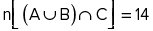
-
02.

- 04. 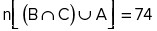
- 08. 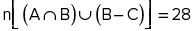
-
16.

- Soma:
7
Uefs-BA 2018 Em uma empresa com 33 funcionários, 22 são fluentes em italiano, 14 são fluentes em alemão e 27 são fluentes em francês. Sabe-se que todos os funcionários são fluentes em pelo menos uma dessas línguas e que, no total, 18 desses funcionários são fluentes em exatamente duas dessas línguas. O número de funcionários nessa empresa que são fluentes nessas três línguas é
- 2.
- 3.
- 4.
- 5.
- 6.
8
Mackenzie-SP Se A
- O conjunto das partes da
interseção dos conjuntos A e B é 𝒫 (A ∩ B)
= {{1}, {5}, {1, 5}}. - O conjunto complementar de B em relação a A é 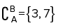.
- O conjunto das partes do complementar de B em relação a A é 𝒫 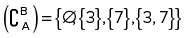.
- O conjunto A interseção com o conjunto B é A
ì B= {1, 5}. - O número de elementos do conjunto das partes da união
dos conjuntos A e B é n[𝒫(A ∪ B)]
= 16.
9
UFSJ/PAS-MG O diagrama que representa o conjunto 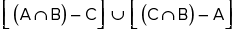 é
10
Uece Uma pesquisa com todos os trabalhadores da FABRITEC, na qual foram formuladas duas perguntas, revelou os seguintes números:205 responderam à primeira pergunta;205 responderam à segunda pergunta;210 responderam somente a uma das perguntas;um terço dos trabalhadores não quis participar da entrevista.
Com estes dados, pode-se concluir corretamente que o número de trabalhadores da FABRITEC é
- 465.
- 495.
- 525.
- 555.
Superação
IME-RJ 2016 Dados três conjuntos quaisquer F, G e H. O
conjunto G
- 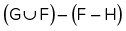
- 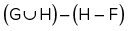
-

- 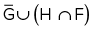
- 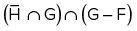
Seção olímpica
1
OPM-SP Dizemos que
um inteiro positivo n é semiperfeito se ele é a soma de um subconjunto
de seus divisores positivos menores do que n. Por exemplo, 20 é semiperfeito pois 20
- Mostre que 945 é semiperfeito, ou seja, apresente um subconjunto de divisores positivos menores do que 945 cuja soma é 945.
- Prove que todo número semiperfeito ímpar tem mais de sete divisores positivos.
2
OBM Em um hotel há 100 pessoas. 30 comem porco, 60 comem galinha e 80 comem alface. Qual é o maior número possível de pessoas que não comem nenhum desses dois tipos de carne?
- 10
- 20
- 30
- 40
3
OBM Devido a um defeito de impressão, um livro de 600 páginas apresenta em branco todas as páginas cujos números são múltiplos de 3 ou de 4. Quantas páginas estão impressas?
- 100
- 150
- 250
- 300
- 430